Лабораторная работа 3
Описание
Этот проект предоставляет API для управления системой гостиницы, с возможностью управления этажами, номерами, клиентами, записями о пребывании, графиками уборки и записями о выполненных уборках. Он позволяет сотрудникам гостиницы управлять регистрацией клиентов, отслеживать графики уборки и генерировать различные отчеты, связанные с пребыванием клиентов.
Модели
- Floor (Этаж): Представляет этажи в гостинице.
- Room (Номер): Представляет номера в гостинице.
- Client (Клиент): Представляет клиентов, которые проживают в гостинице.
- StayRecord (Запись о пребывании): Отслеживает дату заезда и выезда клиента в гостинице.
- Employee (Сотрудник): Представляет сотрудников гостиницы, отвечающих за уборку и другие задачи.
- CleaningSchedule (График уборки): Определяет график уборки номеров.
- CleaningRecord (Запись об уборке): Отслеживает выполненные уборки номеров сотрудниками.
API Эндпоинты
Доступные эндпоинты для взаимодействия с системой:
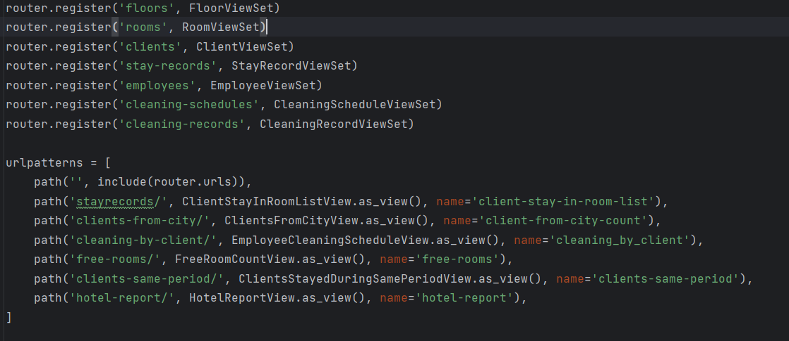
Управление этажами
GET /floors/– Получить список всех этажей.POST /floors/– Создать новый этаж.GET /floors/{id}/– Получить информацию об определенном этаже по ID.PUT /floors/{id}/– Обновить информацию об определенном этаже.DELETE /floors/{id}/– Удалить этаж.
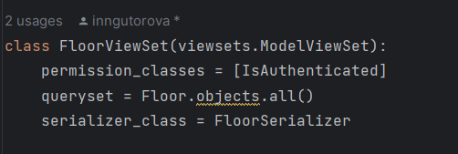
Управление номерами
GET /rooms/– Получить список всех номеров.POST /rooms/– Создать новый номер.GET /rooms/{id}/– Получить информацию о номере по ID.PUT /rooms/{id}/– Обновить информацию о номере.DELETE /rooms/{id}/– Удалить номер.
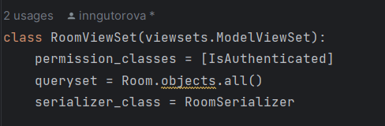
Управление клиентами
GET /clients/– Получить список всех клиентов.POST /clients/– Создать нового клиента.GET /clients/{id}/– Получить информацию о клиенте по ID.PUT /clients/{id}/– Обновить информацию о клиенте.DELETE /clients/{id}/– Удалить клиента.
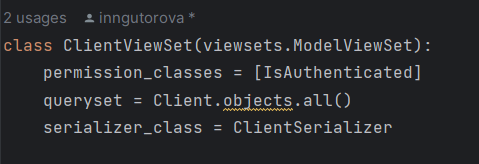
Управление записями о пребывании
GET /stay-records/– Получить список всех записей о пребывании.POST /stay-records/– Создать новую запись о пребывании.GET /stay-records/{id}/– Получить информацию о записи по ID.PUT /stay-records/{id}/– Обновить запись о пребывании.DELETE /stay-records/{id}/– Удалить запись о пребывании.
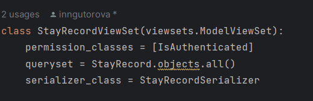
Управление сотрудниками
GET /employees/– Получить список всех сотрудников.POST /employees/– Создать нового сотрудника.GET /employees/{id}/– Получить информацию о сотруднике по ID.PUT /employees/{id}/– Обновить информацию о сотруднике.DELETE /employees/{id}/– Удалить сотрудника.
Управление графиками уборки
GET /cleaning-schedules/– Получить список всех графиков уборки.POST /cleaning-schedules/– Создать новый график уборки.GET /cleaning-schedules/{id}/– Получить информацию о графике уборки по ID.PUT /cleaning-schedules/{id}/– Обновить график уборки.DELETE /cleaning-schedules/{id}/– Удалить график уборки.
Управление записями об уборке
GET /cleaning-records/– Получить список всех записей об уборке.POST /cleaning-records/– Создать новую запись об уборке.GET /cleaning-records/{id}/– Получить информацию о записи об уборке по ID.PUT /cleaning-records/{id}/– Обновить запись об уборке.DELETE /cleaning-records/{id}/– Удалить запись об уборке.
Дополнительные представления
-
Stay in Room (Пребывание в номере):
GET /stayrecords/– Получить записи о пребывании, отфильтрованные по номеру, дате заезда и дате выезда. 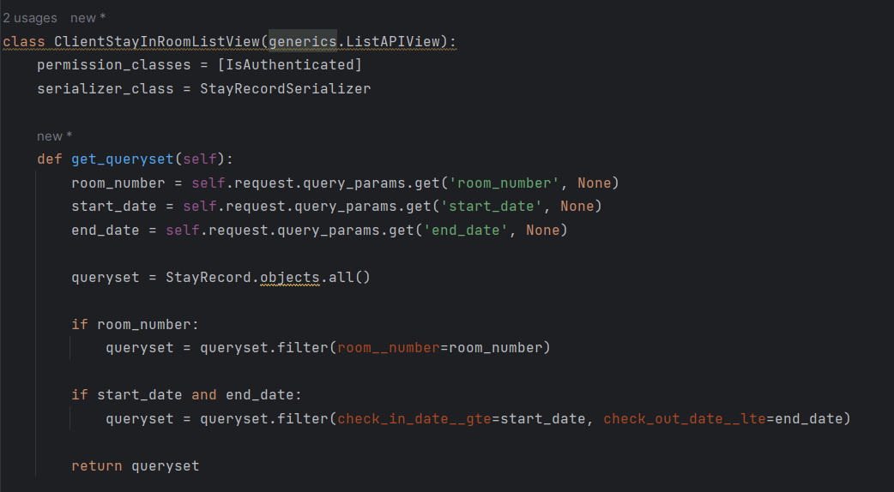 -
Clients From City (Клиенты из города):
GET /clients-from-city/– Получить количество клиентов, проживающих в указанном городе. 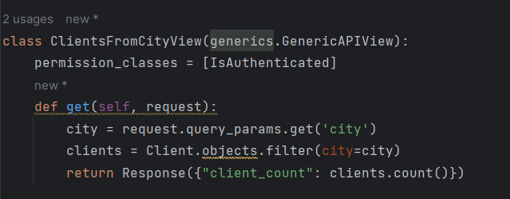 - Cleaning Schedule By Client (График уборки по клиенту):
GET /cleaning-by-client/– Получить список сотрудников, которые выполняют уборку номеров для конкретного клиента в определенный день недели. 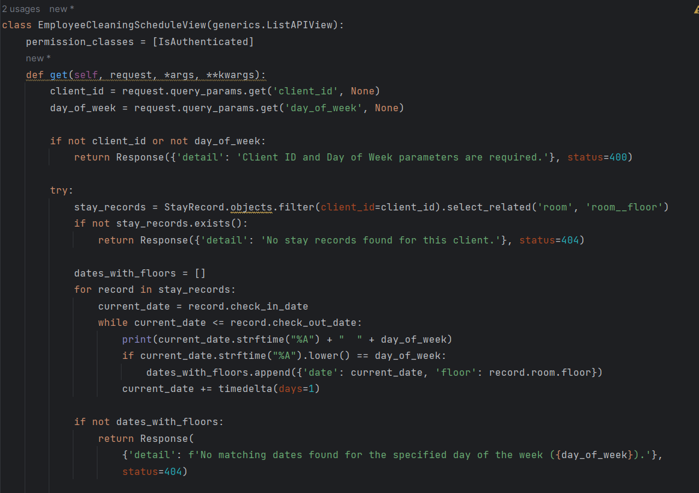 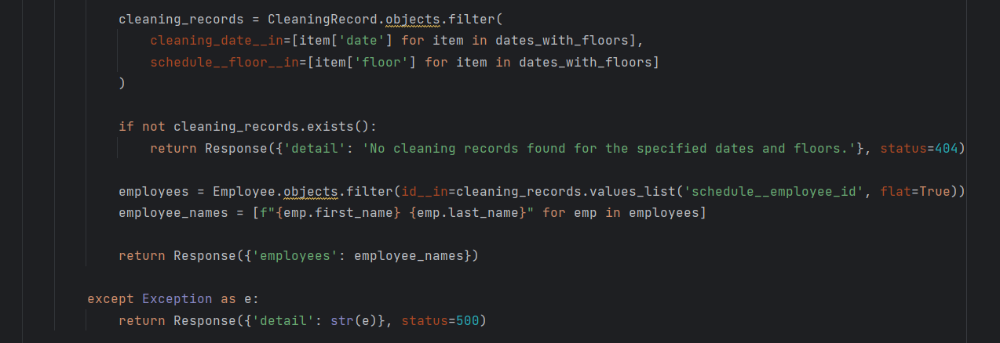 - Free Rooms (Свободные номера):
GET /free-rooms/– Получить количество доступных свободных номеров. 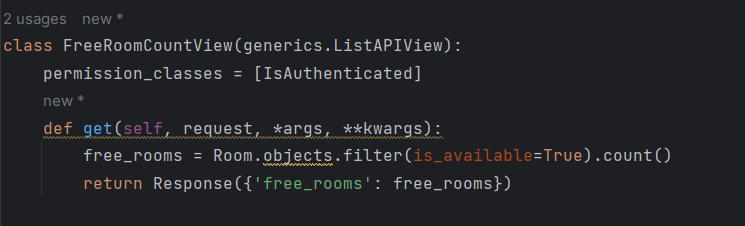 - Clients Stayed During Same Period (Клиенты, проживавшие в одно и то же время):
GET /clients-same-period/– Получить список клиентов, проживавших в гостинице в тот же период времени, что и конкретный клиент. 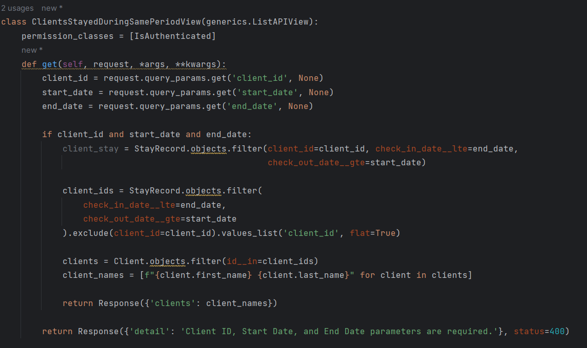 - Hotel Report (Отчет по гостинице):
GET /hotel-report/– Сгенерировать отчет по пребыванию клиентов в заданный квартал и год, включая доход по номерам, количество номеров на каждом этаже и количество клиентов в номерах. 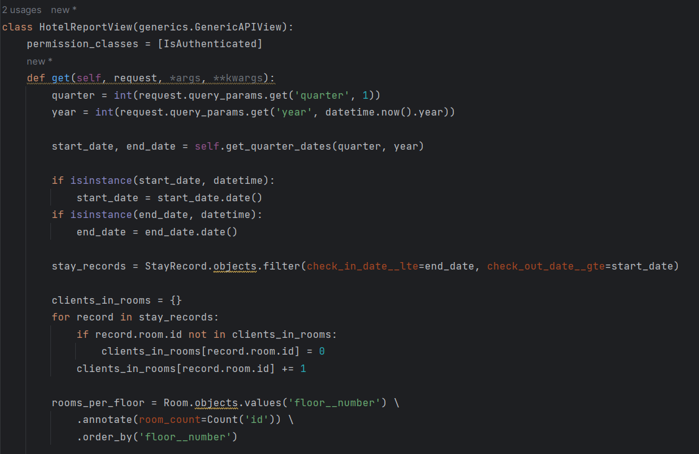
Аутентификация и права доступа
Все представления защищены классом IsAuthenticated, который обеспечивает доступ только авторизованным пользователям.
Конфигурация маршрутовmkdocs
API представления зарегистрированы с использованием DefaultRouter для простого маршрутизации:
router = DefaultRouter()
router.register('floors', FloorViewSet)
router.register('rooms', RoomViewSet)
router.register('clients', ClientViewSet)
router.register('stay-records', StayRecordViewSet)
router.register('employees', EmployeeViewSet)
router.register('cleaning-schedules', CleaningScheduleViewSet)
router.register('cleaning-records', CleaningRecordViewSet)